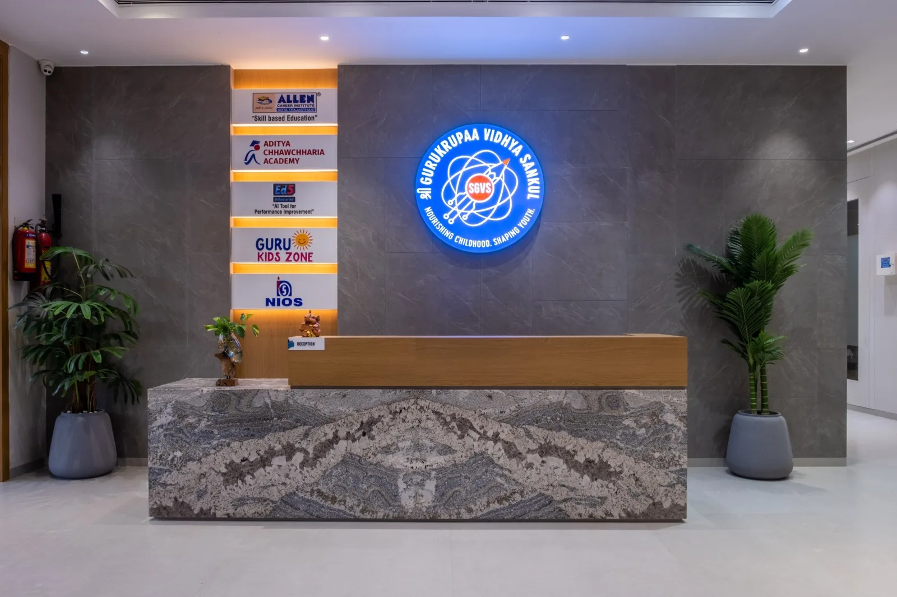
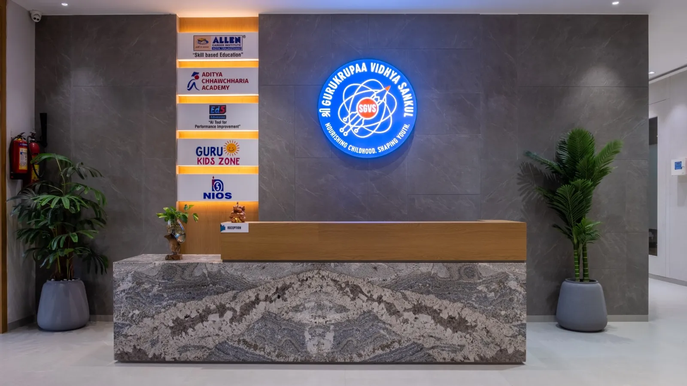
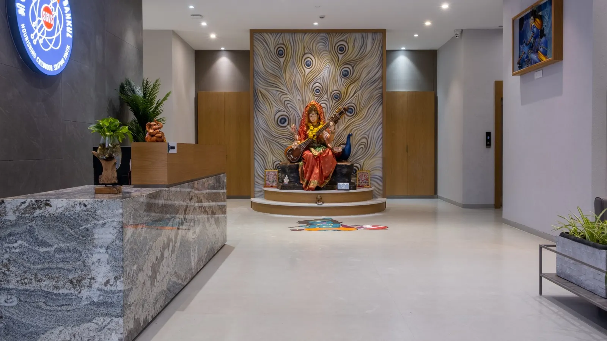
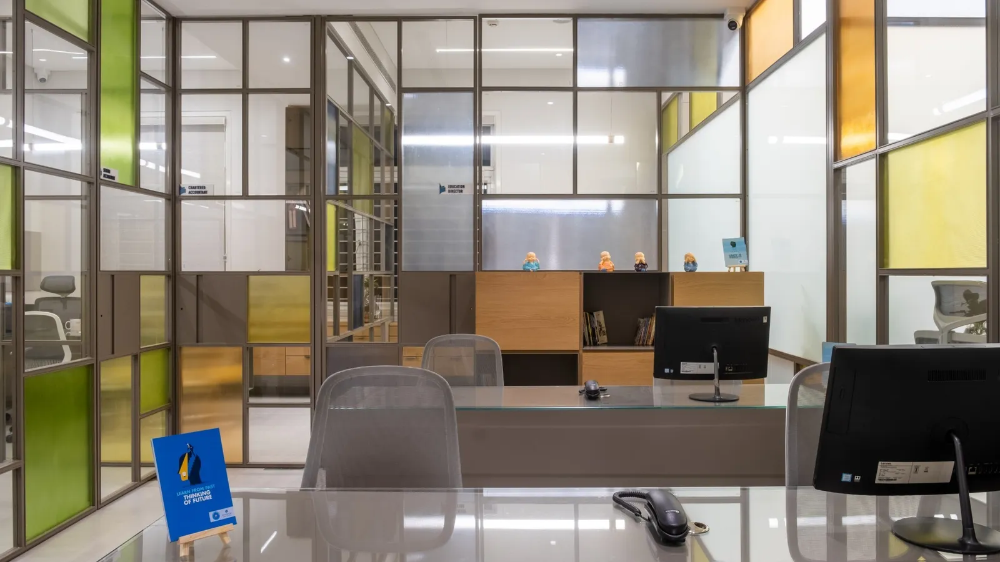
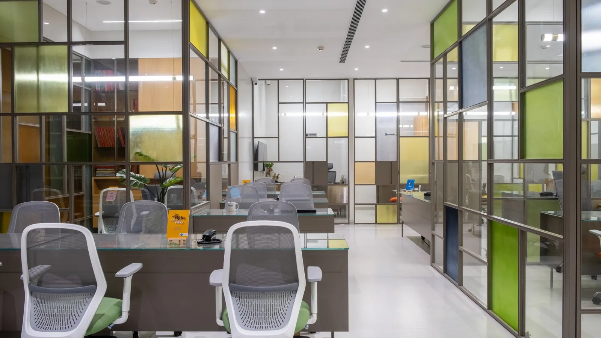
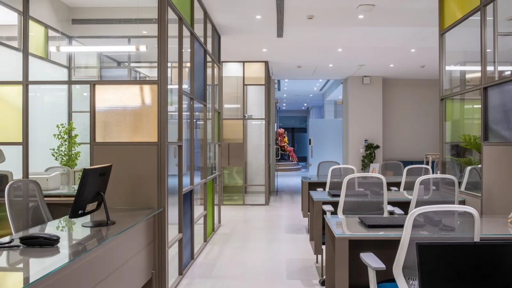
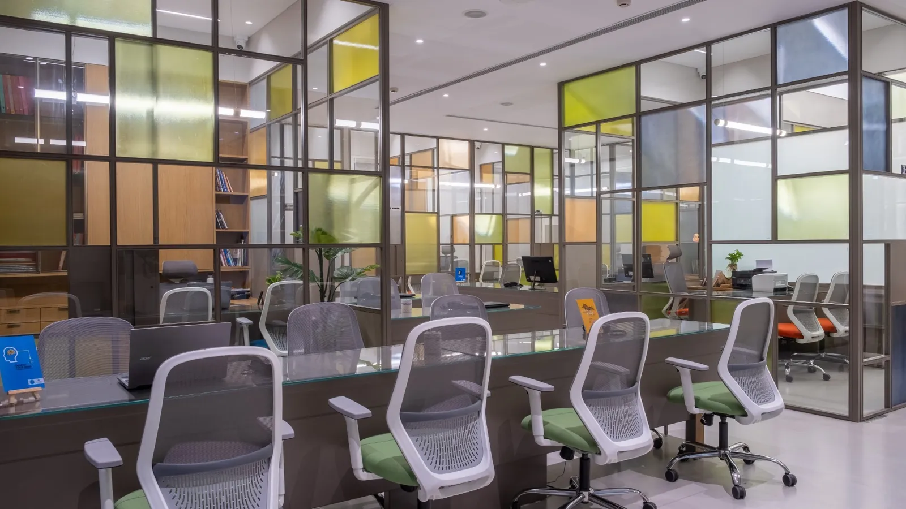
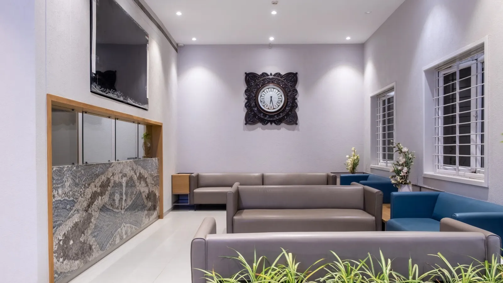
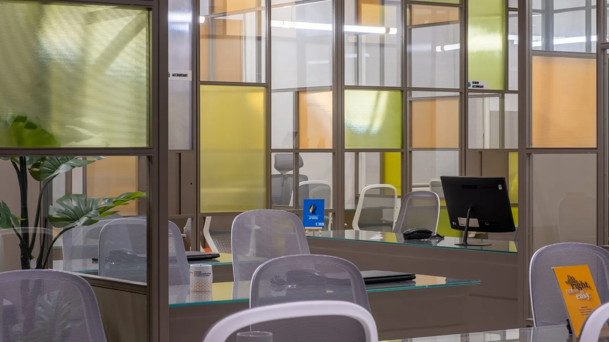

An education group’s head office, colour-blocked in glass and light.
The project
Shree Gurukrupaa Vidhya Sankul is the head office of an education group in Surat. Behind a marble reception, marked by the illuminated SGVS identity, the plan opens into a grid of glass-partitioned cabins and open desks, screened by colour-blocked, Mondrian-like glazing that lets light and sightlines flow across the floor.
Framed steel-and-glass partitions in yellow, green, blue and amber divide the workplace without closing it off; warm oak joinery, planted corners and a calm stone floor ground the colour. A serene shrine niche and a comfortable waiting lounge round out an office built to feel both professional and welcoming.
Principal Designer Bhavin Swami
The idea
Glass-partitioned cabins and open desks keep the whole floor connected.
Mondrian-like coloured glazing brings energy and identity to the workplace.
Framed glass and planted corners carry light deep into the plan.
Oak joinery and a calm stone floor ground the colour.
The space







